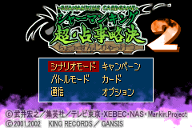
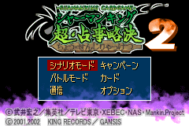

Shaman King Card Game - Chou Senjiryakketsu 2 (Japan)
SRAM 256K Save Format Spec gbakit Built-In
Cartridge Identity
- Game Code
AKAJ(FamilyAKA)- Header Title
SHAMAN KING2- Maker / Revision
EA/ rev0- ROM Size
- 8.0 MiB (8,388,608 B)
- Save Media
SRAM 256K- SHA-256
be5421eda8eac576fa64210c4779194ed8ead7853593ea9c533508ccb809879e- Engine / SDK Group
comm-002(145 families)
Screenshots


Battery Save Format Specification
Open Full Save Format SpecDownload Sample .sav (32,768 B)Download save-format.json
- Specification Coverage
- 40 mapped fields · 4 verified checksum(s) · Confidence: MEDIUM
- gbakit Built-In Support
- Built-in (AKAJ)
gbakit save verify AKAJ save.sav
gbakit save decode AKAJ save.sav
gbakit save fix AKAJ damaged.sav -o repaired.savObserved Battery Save Layout
- Fill Byte & Active Size
0x00fill · 5–723 / 32,768 B active (entropy 0.07 bits/B)- Active Offset Ranges
0x0–0x4,0x8–0xB,0x10–0x13,0x824,0x83E,0x8A5–0x8A6,0x8CF,0x8F5, +8 more (249 total)- ASCII Magic / Headers
3110a- Observed Variable Regions
- 718 bytes across 248 spans:
0x8–0xB,0x10–0x13,0x824,0x83E,0x8A5–0x8A6,0x8CF,0x8F5,0x8F9, +12 more - Candidate Checksum/Counter Spans
0x8–0xB,0x10–0x13,0x824,0x83E,0x8A5–0x8A6,0x8CF,0x8F5,0x8F9, +8 more- Integrity Check
- Confirmed at
0x8
ROM Assets, Compression & Audio
- BIOS Compression
- LZ77 (
0x10): 664 streams · RLE (0x30): 0 streams - ROM Pointer Tables
- 155 tables (3 pointing to validated compressed streams)
- SDK Backup Tags
SRAM_V112
Hardware MMIO Subsystems
ppu_display0x8000724save_bus_sram_flash0x80019ec,0x8001a44,0x8001a9c,0x8001b5c